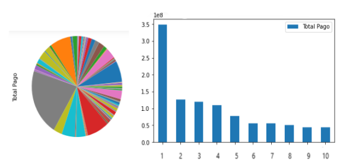
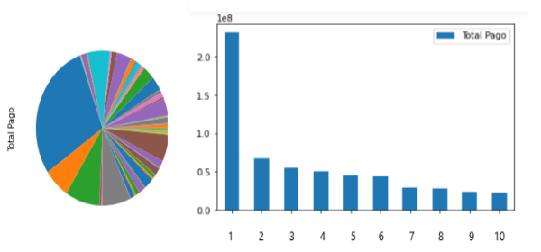
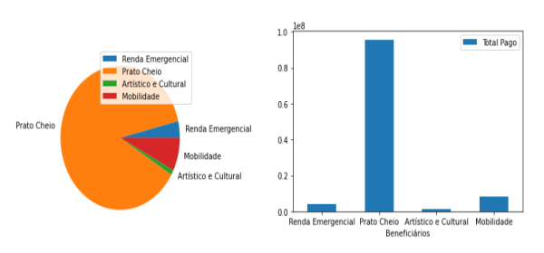

This was my capstone project for the Google data analytics course. I analyzed data available
online about the funds destined to combat and prevent CoV-19 spread in Brasilia. My main objective
has been basically to identify some of the major creditors and their related areas of actuation.
Since the start of the COVID-19 pandemic, the government of Brasilia
has destinated over 1.7 bi reais (300 mi usd) together with 800 mi reais (140 mi usd) received from the central government
to combat the spread of the virus in the capital.
The
transparency portal on the government's website already provides a number of details on how
major funds are being
allocated with useful graph visualizations, but for the costs related to COVID this is somewhat still
lacking. The thing
I was
mainly interested in was knowing who the biggest creditors were and possibly nailing down their
related areas of actuation.
I started by exporting the data available on the website and to generate the list of biggest creditors, I
ran the command with pandas on a jupyter notebook:
total_pay = df.groupby(by='Credor').agg(
lambda x: x.astype(float).sum()
)
total_pay
realpay = total_pay.sort_values(by=['Total Pago'], ascending=False)
realpay
This wasn't so easy to figure it out and the correct syntax was only realized after digging out a
little. The main challenge was discovering a way to sum all repeated values in the dataframe and
afterwards group all of them in descending order.
An alternative considered was the following piece of code in R which achieves the same thing:
df <- data.table(df)
df[ , .(val= sum(val)), by = "Credor" ]
Next I selected the first 10 biggest creditors in order to break down their areas of actuation.
The pie chart in the picture below shows that no major amount of funds is being destined to a sole
creditor, with the biggest share pertaining to a sector of the government (1). The other creditors
are shown in this
table.

One thing worth pointing out is that although marketing(6) only constitutes a small fraction
of the pie chart, the costs related to it surpass for instance those spent with
social pension(8) as can be noted in the bar graph above. Although marketing is certainly a
worthwhile investment, since people need to be kept up to date with the latest news and
governments endeavours during the pandemic, one might wonder if the cost isn't a little
too saturated.
The same analysis can be carried out for the resources that were allocated with the money
received from the central government. The table of creditors can be found
here
and the results are expressed in the graphs below.

As expected, the biggest creditors are the same as the ones before, but this time BINDER F.C
is not present in the top ten. This might indicate that no money from the central govt. was used for
marketing. Confirmation of this might be found in the list
of
emergency contracts
that were closed during the pandemic
and already provides a big list of creditors.
As a final analysis, I took the data that was allocated for specific purposes and generated the graphs
below. We note that most of the resources were allocated to services related to food (87.7%)
with the rest being destined to mobility (7.4%), emergency aid (3.7%) and cultural and artistic related costs
(1.2%).

{kind=link}
{kind=link}